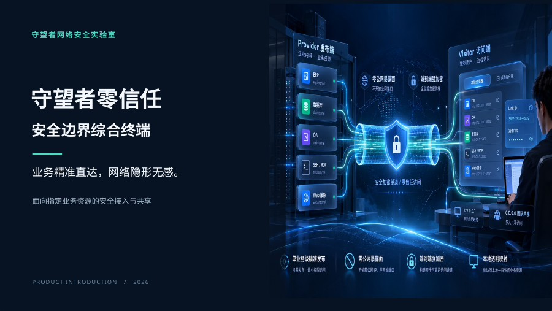

RESOURCE CENTER
产品文档中心
白皮书、使用说明书和产品演示资料。PDF 可直接在线阅读，演示文稿提供可编辑 PPTX 下载。

PRESENTATION · 13 SLIDES
守望者零信任 · 产品介绍演示文稿
13 页，16:9 宽屏。包含产品定位、访问架构、资源授权、客户端界面与应用场景。提供在线阅读 PDF 和可编辑 PPTX。

版本与阅读提示
产品白皮书封面版本为 V1.1，用户使用说明书封面版本为 V1.1，适用于客户端 v1.04；配套本机网络助手说明书为 V1.0。浏览器通常会直接打开 PDF；若浏览器禁用了内置阅读器，可以使用下载按钮保存后阅读。
需要客户端？
前往软件下载 ↗Windows 客户端 v1.04 已发布，安装包包含配套的本机网络助手。